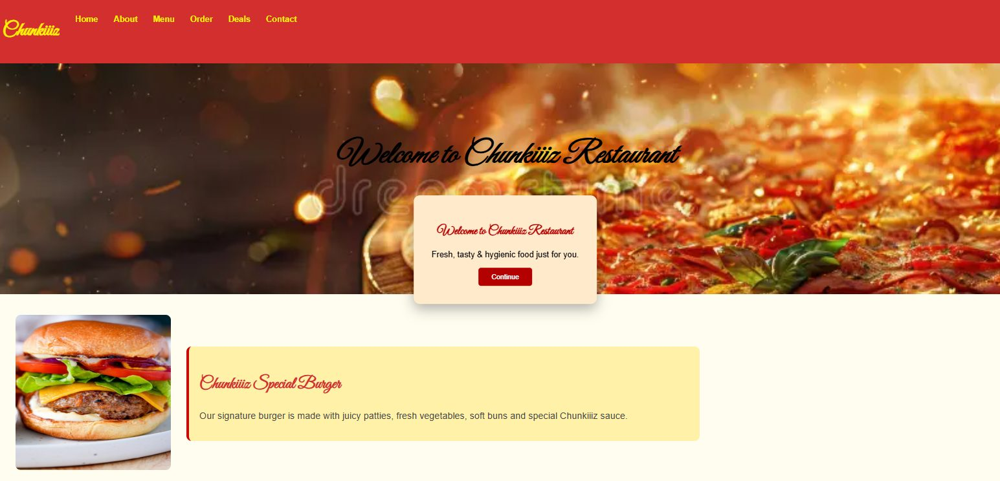
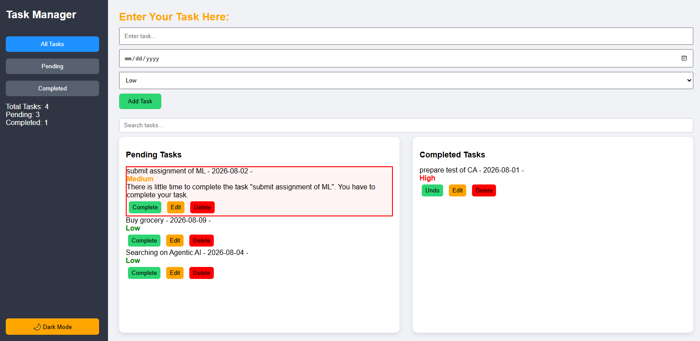

Chunkiiiz Restaurant Website
A 6-page restaurant site with a localStorage-powered welcome popup and a PHP order form.
Hi, I'm
Frontend AI Engineering Student & Intern @ FlyRank
Building clean and responsive frontend interfaces using HTML, CSS, JavaScript and AI-assisted development workflows.


A 6-page restaurant site with a localStorage-powered welcome popup and a PHP order form.

A to-do app with filtering, search, priority levels, dark mode, and full data persistence.
View Project →